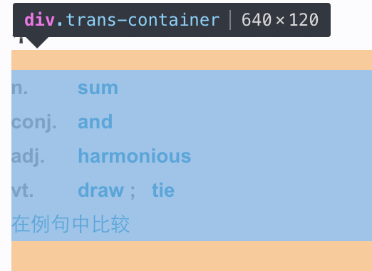
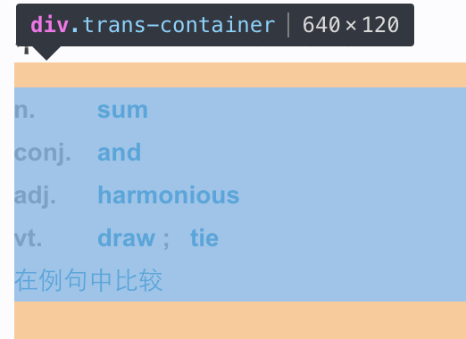

Python web crawler
jiancheng.zhai
Created: 2016-10-12 三 01:05
工作原理
Http 请求
urllib
>>> values = {} >>> values['username'] = "1016903103@qq.com" >>> values['password'] = "XXXX" >>> headers = {'User-Agent':'Mozilla/6.0 (Windows; U; Windows NT 6.1; en-US; rv:1.9.1.6) Gecko/20091201 Firefox/3.5.6' } >>> data = urllib.urlencode(values) >>> request = urllib2.Request("http://www.baidu.com", data, headers=headers) >>> response = urllib2.urlopen(request) >>> print response.read()
requests: HTTP for Humans 发送请求
# 设置编码 >>> r.encoding 'utf-8' >>> r.encoding = 'ISO-8859-1' # 定制 headers >>> url = 'https://api.github.com/some/endpoint' >>> headers = {'user-agent': 'my-app/0.0.1'} >>> r = requests.get(url, headers=headers) # 发送请求 >>> r = requests.put("http://httpbin.org/put") >>> r = requests.delete("http://httpbin.org/delete") >>> r = requests.head("http://httpbin.org/get") >>> r = requests.options("http://httpbin.org/get")
requests: HTTP for Humans 传递参数
>>> payload = {'key1': 'value1', 'key2': 'value2'} >>> r = requests.get("http://httpbin.org/get", params=payload) >>> print(r.url) http://httpbin.org/get?key2=value2&key1=value1 # 读取响应内容 >>> r = requests.get('https://github.com/timeline.json') >>> r.text u'[{"repository":{"open_issues":0,"url":"https://github.com/...
页面解析
html - beautifulsoup
html = urllib2.urlopen(req, timeout=20).read() content = BeautifulSoup(html, "lxml") title = content.title.get_text()
html - pyquery
from pyquery import PyQuery as pq content = requests.get(url, headers=headers) doc = pq(ret.text) en_mean_list = doc('div.trans-container')('ul')('p.wordGroup')
 

js - selenium
from selenium import webdriver from selenium.common.exceptions import NoSuchElementException from selenium.webdriver.common.keys import Keys base_url = 'http://www.baidu.com/' browser = webdriver.Chrome() browser.get(base_url) # 读取响应内容, 这里使用 pyquery 进行解析 doc = pq(browser.page_source) doc.xhtml_to_html() # 点击元素 browser.find_element_by_css_selector('.pagination .next').click()
js - PhantomJS
- HEADLESS WEBSITE TESTING
- SCREEN CAPTURE
- PAGE AUTOMATION
- NETWORK MONITORING
- http://phantomjs.org/
扩大规模
防屏蔽 - 代理池
page_num = 10 url_prefix = "http://www.xicidaili.com/wn/{pn}" url_list = [url_prefix.format(pn=x) for x in range(1, page_num)] headers = {'User-Agent':'Mozilla/5.0 (Windows NT 6.1; WOW64) AppleWebKit/537.36 (KHTML, like Gecko) Chrome/33.0.1750.154 Safari/537.36'} headers['Content-Type'] = 'application/x-www-form-urlencoded' requests = requests.get(url, headers=headers) soup = BeautifulSoup(requests.text) tables = soup.findAll('table') trs = table.findAll('tr') res_list = [] for index, tr in enumerate(trs): res_list.append(item.text.encode('utf8').strip()) ip, port, country, proxy_type, protocol = res_list[1:6]
防屏蔽 - 换 user agent
# 随机换 user agent from fake_useragent import UserAgent ua = UserAgent() headers = {'User-Agent': ua.random}
防屏蔽 - 合理的抓取频率
cookie 处理
import browsercookie cj = browsercookie.chrome() opener = urllib2.build_opener(urllib2.HTTPCookieProcessor(cj)) response = opener.open(url) resource_data = response.read()
重复性验证 bloom filter
# 解决大样本下 Hash 空间/时间增长的问题 from pybloom import BloomFilter, ScalableBloomFilter # 误报率 0.1% bf = BloomFilter(capacity=10000, error_rate=0.001) bf.add('test') print 'test' in bf sbf = ScalableBloomFilter(mode=ScalableBloomFilter.SMALL_SET_GROWTH) sbf.add('dddd') print 'ddd' in sbf
并发 - 多进程
from multiprocessing import Process, Event from multiprocessing import Manager from multiprocessing import Queue, JoinableQueue POISON_PILL = "POISON_END_PROCESSING" manager = Manager() worker = Queue() worker_num = 20 pool = Pool(worker_num, crawl_url, (_queue, result_queue)) pool.close() pool.join()
协程
import gevent from gevent import monkey monkey.patch_all() #monkey.patch_all(thread=False, socket=False)
并发 - 分布式
import redis redis_conn = redis.StrictRedis() FETCH_QUEUE = 'FETCH' for item in item_list: redis_conn.rpush(FETCH_QUEUE, item)